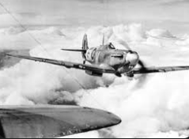

Résumé de la Bataille d'Angleterre
La Bataille d'Angleterre a été une campagne aérienne majeure pendant la Seconde Guerre mondiale, qui a eu lieu de juillet à octobre 1940.
- Contexte : Après la défaite rapide de la France en juin 1940, l'Allemagne nazie envisage une invasion de la Grande-Bretagne, connue sous le nom d'Opération Seelöwe. Il était crucial pour l'Allemagne de détruire la Royal Air Force (RAF) britannique pour obtenir la supériorité aérienne.
- Déroulement :
- Juillet 1940 : La Luftwaffe commence ses attaques contre les aérodromes et les usines aéronautiques britanniques.
- Août 1940 : Les attaques se concentrent sur les bases aériennes et les infrastructures militaires.
- Septembre 1940 : La Luftwaffe bombarde les villes britanniques, y compris Londres, dans ce qui est connu sous le nom de Blitz.
- Octobre 1940 : Les attaques aériennes allemandes diminuent en intensité et en efficacité.
- Issue : La RAF a réussi à défendre son territoire et à repousser les attaques allemandes, empêchant ainsi l'invasion de la Grande-Bretagne.
- Importance : La Bataille d'Angleterre a été cruciale car elle a stoppé l'expansion vers l'ouest de l'Allemagne nazie et a renforcé le moral des Alliés.
